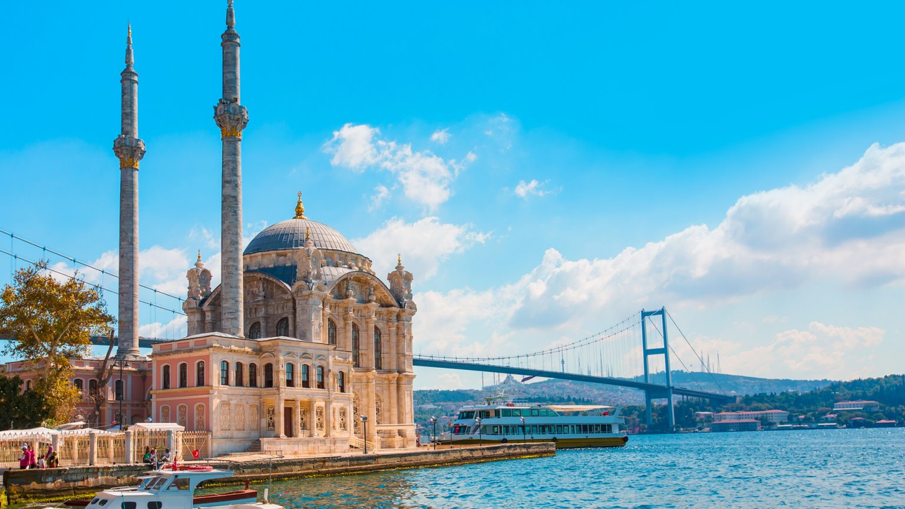

-
Adalar
Adalar İstanbul'un en çok rehabet gören konumlarından bir tanesi
-
Çamlıca Tepesi
Çamlıca Tepesine çıkıp İstanbulu tepeden seyredebilirsiniz
-
Eminönü
Eminönü'ne gidip balık ekmek yiyebilirsiniz.
-
FethiPaşa Korusu
Bu koru mükemmel boğaz manzalıdır. Koruya çıkıp çay içip boğazı seyredebilirsiniz.
-
PierreLoti-Haliç
PierreLoti tepesine çıkıp muhteşem Haliç manzarasını izleyebilirsiniz.
-
Haydarpaşa
Kadıköye gidip tarihi Haydarpaşa garını görebilirsiniz
-
Ortaköy Cami
Ortaköye gidip boğaza sıfır Ortaköycami önünde fotoğraf çektirebilirsiniz
 -
Vapuz Gezileri
İstanbulda boğaz turu yapan vapurlara binerek harika bir gün geçirebilirsiniz
daha sonra yeni fotolar eklenecektir, Hoşçakalın.